Chapter 4: Merkury Website
Merkury Overview
Overview
Discuss on what are we going to build
What will we learn along the project
And some small reminders
Details
What are we building
An introductory website of the merkury dashboard which displays:
- The important features
- The workflow
- The powerful design of the Merkury dashboard
What are we learning
Making powerful animation by CSS and positioning elements
Deal with two different plugins: scroll reveal and jQueryUI
Components to implement
The Navbar
- Apply transition effect
- Apply Scrollspy
- Collapse Navbar when item clicked by jQuery
The Header
- Chart animation in the background
- A title and a subtitle
- A
Get Startedbutton with a nice hover effect - An image display between header and features section
Features Section
First Part
- Images represent features of the dashboard with cool over effect
- A short description text with
See morebutton below
Second Part
- On the left, we have title and some text
- On the right side, we have image with the fade-in animation
Drag and Drop Section
On the right, a title with some text and two navigation button
On the left, we have customize drop down button, allow drag and drop item
Special Section
- Title and some text
- Running line effect when hover
- Infinite floating effect on the image
Pricing Section
- Three Bootstrap card with fade-up-in effect with different delay
Join Section
- A text with
Join now!and separate line
Footer Section
- All right reserved and social buttons
Some visual images
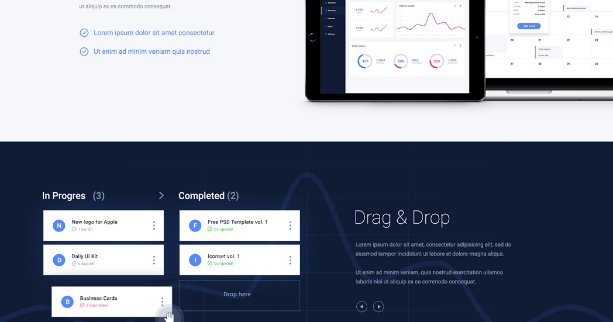
Note
Our website will be mobile first, which mean it have to fit any devices
And never forget the Testing part
Bookmarks
None
Prepare Files
Overview
Build folder structure
Extract images and colors from PSD
Details
Folder structure
Similar to OpenCharity folder structure
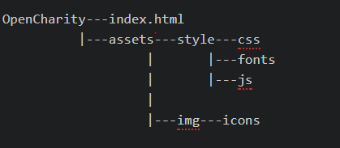
Colors used
dark-blue-color: #oe1a35;
light-blue-color: #5584ff;
light-grey-color: #8492af;
black-color: #000000;
white-color: #ffffff;
Fonts used
Roboto-regular-font Roboto-bold-font Roboto-thin Roboto-medium Montserrat-regular Montserrat-bold Font-awesome
Include libraries
Bootstrap
Download
bootstrap.min.cssandbootstrap.min.jsfrom Bootstrap Download LinkSave them into
./assets/style/css/and./assets/style/js/
jQuery
- Go to jQuery Download and save it to
./assets/style/js/
Popper.js
- Go to Popper Download and save it to
./assets/style/js/
Bookmarks
None
Linking Files
Overview
Link image and library with index.html
Apply some custom CSS
Details
Linking Files
The index html should appear like below

Custom CSS
- Define
fontfaces - Assign colors and fonts to variables
- Copy General Reset CSS code from Open Charity project into
style.less - Customize some tag with background-color, margin and padding
Bookmarks
Link to GitHub Project
Navbar Part 1
Overview
Implement styles for Navigation Bar
Details
Implementation
- Display favicon
- Display Merkury logo
- Implement navbar, navbar links and navbar items styles
- Add padding
- Add hover effect
- Add transition
- Change font-family
- Change background color
Result
The background of navbar is transparent at present because it will inherit the website background later on
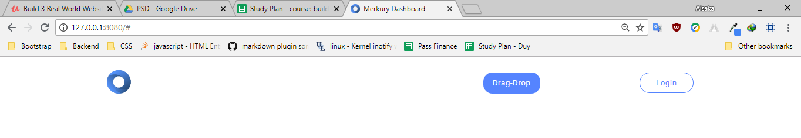
Bookmarks
Link to GitHub Project
Navbar Part 2
Overview:
Add some enhancements to make our navbar more interactive
Details:
Effect implemented
- Close Responsive menu when a link is clicked
- Activate scrollspy to add active class to navbar items on scroll
- On scroll down if the offset is higher than 50px the navbar shrink and change color
Result
Navbar Before shrinking
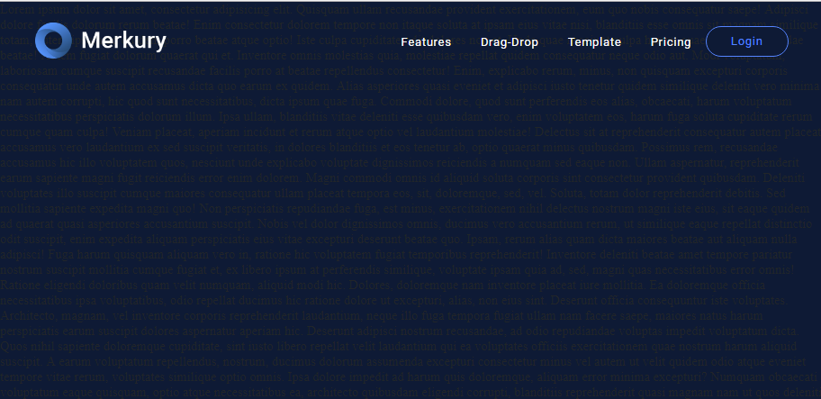
Navbar After shrinking
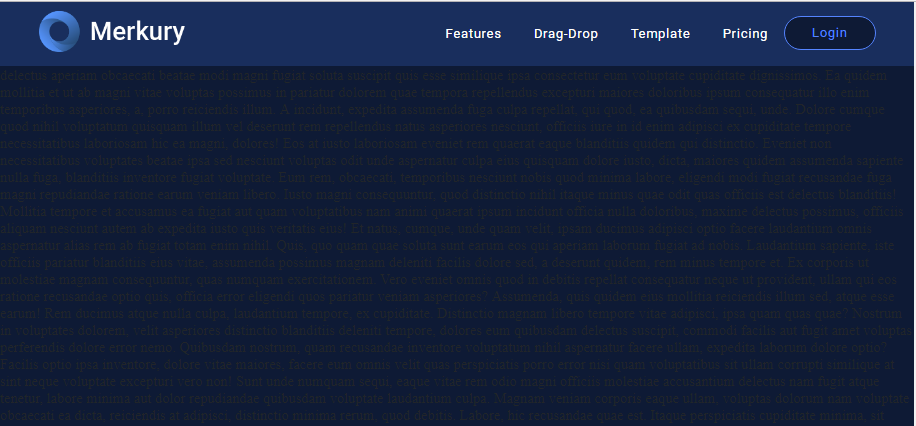
Note
Remind of media rule
@media rule CSS: The @media rule is used in media queries to apply different styles for different media types/devices.
Media queries can be used to check many things, such as:
- width and height of the viewport
- width and height of the device
- orientation (is the tablet/phone in landscape or portrait mode?)
- resolution
Details about syntax and usage are in Bookmarks
Bookmarks
Link to GitHub Project
Header
Overview:
Implement UI for page header sections
Details:
Components implemented
- A title, a sologan and
Get startedbutton below - Dashboard image with glowing sides extracted from PSD
- Grid background with chart on top
- Chart background with left-to-right linear moving effect
Result
Note
- Remind of CSS
@keyframe, checkout link in the Bookmarks
Bookmarks:
Link to GitHub Project
Service Section
Overview:
Implement UI service section
Details:
Components implemented
- Three columns represent three service with logo, title and detail text
- A
See Morebutton with hover effect - Light gray divider between each image
Styling
- Customize font weight, font size and font family on titles and texts
- Add hover effect on
See Morebutton - Add hover effect on logo images
Result
Note
- Psuedo element
::after
What is it?
::after is a pseudo element which allows you to insert content onto a page from CSS (without it needing to be in the HTML). While the end result is not actually in the DOM, it appears on the page as if it is, and would essentially be like this:
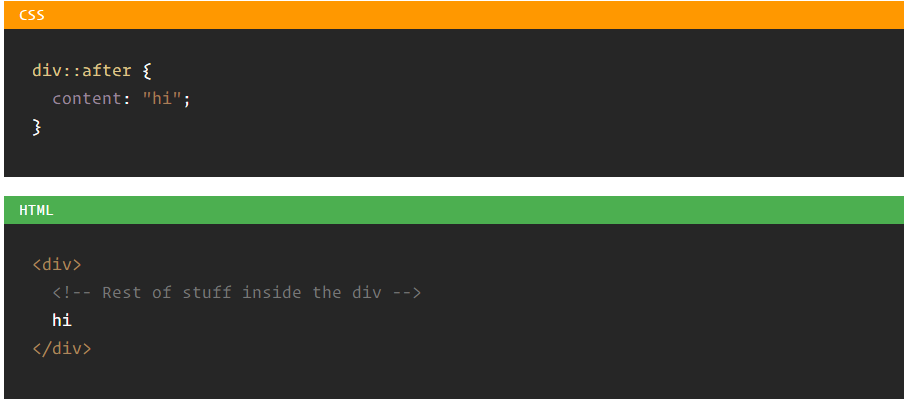
The capability of psuedo elements is tremendous. Check out the Bookmarks
Bookmarks:
Link to GitHub Project
Features Section
Overview:
Implement UI for Features section
Details:
Components implemented
Two Column, one take care of the text and one contains the image
The text includes: A title, a paragraph and two checkpoints.
Styling
- Customize font weight, font size and font family on titles and texts
- Add padding and margin so everything look balanced
Result
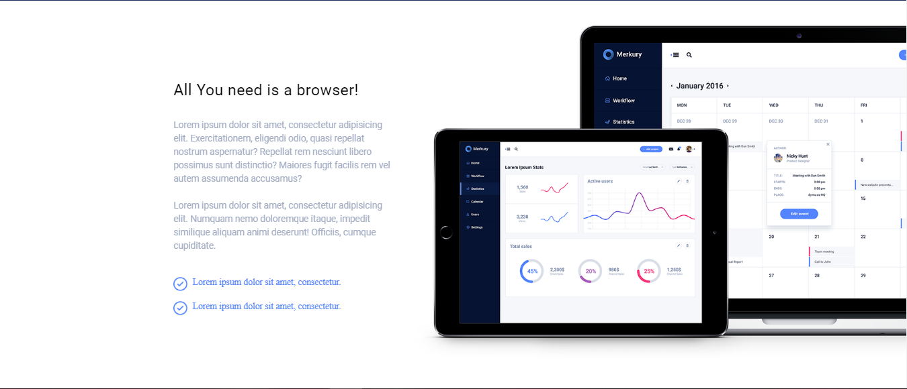
Note
Nothing
Bookmarks:
Link to GitHub Project
Drag and Drop Section Part 1
Overview:
Implement skeleton for Drag and Drop section
Details:
Components implemented
Three Column, one take care of the text and one contains card represent In-progress tasks, one contains card represent Completed tasks
The text includes: A title, a paragraph and two checkpoints.
Result
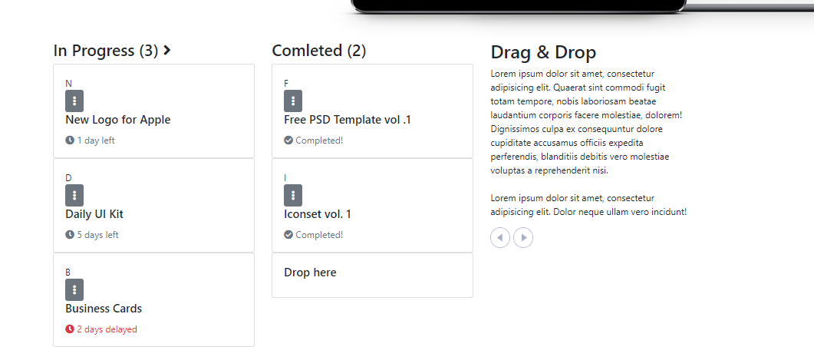
Note
Nothing
Bookmarks:
Link to GitHub Project
Drag and Drop Section Part 2
Overview:
Implement Style for Drag and Drop section
Details:
Requirement
Download and install jQueryUI from here
Copy and paste jquery-ui.min.js into ./assets/style/js
Styling
Add Grid background to
#drag-dropsectionAdd Chart background to
.containerand apply animation on using@keyframeAdd padding and margin to cards to to make them look nicer
Turn
dropdownbutton to ellipsisTurn mouse to crossarrow when hover on draggable item
Effect
Efface the border and
Drop heretext from the#droppableitem when a card is dropped onto using jQueryUIRestrict dragging to horizontally.
Result
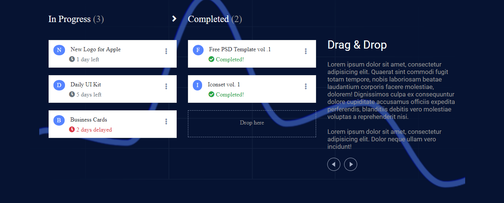
Note
Draggable and Droppable are just two of many interactions supported by jQueryUI. Find out more in the Bookmarks
Bookmarks:
Link to GitHub Project
Template Section
Overview:
Implement UI for Template section
Details:
Idea
A header at the top, horizontally centered
Some description below
Two animated line running until reach the dashboard at the middle
Two paragraph float left and right from where the animation start
The dashboard image will fade up at the beginning then float infinitely
All animation start when the section got hovered on
Components implemented
First row contain the one Header, one sub-text
Second row contains three Columns, one left-side, one right-side, one middle
Left-side and right-side col contain a title, a paragraph, the middle one contain an image as background
Styling
Customize font and color of header and text
Add animation on side columns using
::beforeand@keyframes: a blue circle running toward the center imageApply floating effect on the center image
Result
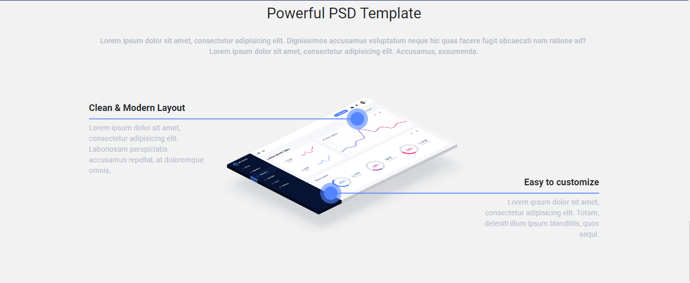
Note
- Remind of CSS
@keyframe, checkout link in the Bookmarks
Bookmarks:
Link to GitHub Project
Pricing Section
Overview:
Implement UI for Pricing section
Remind of box-shadow CSS property
Details:
Components implemented
Three Column, representing three pricing model: BRONZE, SILVER and GOLD
Column contain title, price, benefits (blue-check circle) and fallbacks (x-circle) of each model
Styling
- Customize font and color of header and text
Result
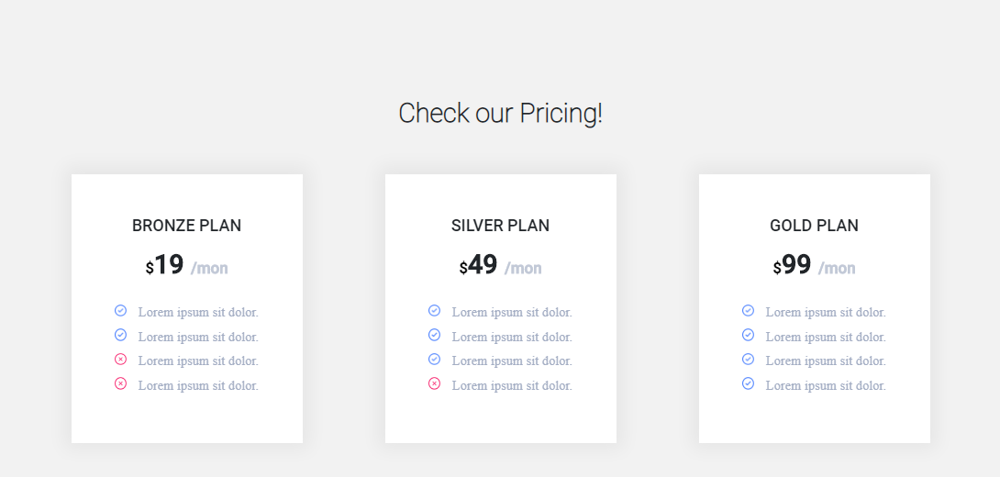
Note
Box shadow CSS property params explain:
The horizontal offset (required) of the shadow, positive means the shadow will be on the right of the box, a negative offset will put the shadow on the left of the box.
The vertical offset (required) of the shadow, a negative one means the box-shadow will be above the box, a positive one means the shadow will be below the box.
The blur radius (required), if set to 0 the shadow will be sharp, the higher the number, the more blurred it will be, and the further out the shadow will extend. For instance a shadow with 5px of horizontal offset that also has a 5px blur radius will be 10px of total shadow.
The spread radius (optional), positive values increase the size of the shadow, negative values decrease the size. Default is 0 (the shadow is same size as blur).
Color (required) - takes any color value, like hex, named, rgba or hsla. If the color value is omitted, box shadows are drawn in the foreground color (text color). But be aware, older WebKit browsers (pre Chrome 20 and Safari 6) ignore the rule when color is omitted.
Using a semi-transparent color like rgba(0, 0, 0, 0.4) is most common, and a nice effect
Find out more about box-shadow in the Bookmarks
Bookmarks:
Link to GitHub Project
Join and Footer Section
Overview:
Implement UI for Join Section
Implement UI for Footer Section
Remind of :before, :after and display: flex
Details:
Components implemented
Join Section: A presentation text with
Join now!button belowFooter Section: Copyright text float left,
Pricing,Blog,Contactand social links float right
Styling
- Customize font and color of text, icon, style
Join now!button - Apply
::beforeand::aftertoJoin now!button
Result
Note
Remind of psuedo classes
- Psuedo element
::after - Psuedo element
::before
What is it?
Pseudo element allows you to insert content onto a page from CSS (without it needing to be in the HTML). While the end result is not actually in the DOM, it appears on the page as if it is, and would essentially be like this:
The capability of psuedo elements is tremendous. Check out the Bookmarks
Remind of flex-box CSS
Flexbox is the secret behind Bootstrap's grid system, help you build neat and responsive layout Checkout the tutorial in the Bookmarks
Bookmarks:
Link to GitHub Project
Enhancements
Overview:
Make website more responsive
Apply some effect to increase/// smoothness
Details:
Enhancements
Test the website with every screen size and make sure everything looks nice
Apply Scrollspy
Apply Smooth Scrolling: Copy the code from this link and paste it into main.js
/ Apply Scroll Reveal
What is Scroll Reveal ?
ScrollReveal is a JavaScript library for easily animating elements as they enter/leave the viewport.
It was designed to be robust and flexible, but hopefully you’ll be surprised below at how easy it is to pick up.
Steps:
Go to https://github.com/scrollreveal/scrollreveal to download the library
Paste the srollreveal.min.js into our js folder
Initialize effect on an element by using this syntax:
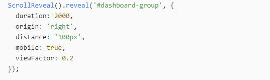
Checkout all options of the library through the link in Bookmarks section
Note
If using jQuery, check every jQuery effect with browser reload.
Bookmarks:
Link to GitHub Project
Testing
Overview:
- See what can we improve
Details:
Compressing images
Upload images to Optimizilla to minify images
Cross-browser testing
Open website on others browser to make sure it works everywhere
Put website online
The same as we did with OpenCharity website: Go to https://app.netlify.com/sites/tender-banach-172fcd/overview to deploy your website to Netlify
Markup Validation Service
Go to W3C Markup Validation Service to check for error in your markup files
Only one warning with lang property of html tag
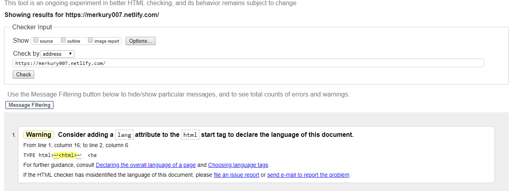
Website speed test
Test result from Pingdom
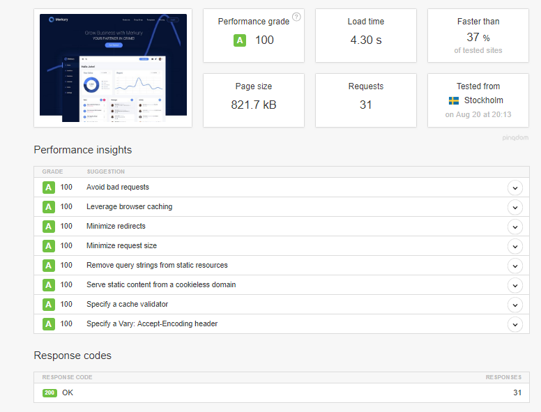
Note
Bookmarks:
Link to GitHub Project
Recap
Overview:
- Revise what we have learnt so far
Details:
Learned
How to export images, getting colors from PSD files
Prepare project files and folders using Trello to-do list
Setting variables and custom stylesheet for our website
How to nest CSS code in less for better understanding and readability
How to use Bootstrap 4 and its components
Create animations using CSS, jQuery or normal JS
Dealt with two different plugins jQueryUI and ScrollReveal and know how to customize them
Write clean code with comments
Dealt with website responsiveness
Increase website performance by compressing images, running markup test and speed test to know what to improve
Fallbacks
- Still need a lot more practices on CSS, CSS animations, jQuery, jQueryUI cuz what the course brought are just the tip of the iceberg.
Bookmarks:
Link to GitHub Project
Important Tips
Overview:
- Share some important tips and advices
Details:
The best three directions for you as a front-end developer/designer\
Start learning about CMSs like WordPress or Drupal...
Start learning a backend language like PHP with Laravel framework or Python with Django framework or so on.
Continue improving your JavaScript skills by learning a single page app framework like AngularJS, or ReactJS or VueJS
You don't need to know everything to be productive, just be confident